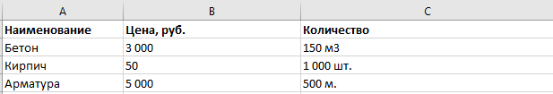
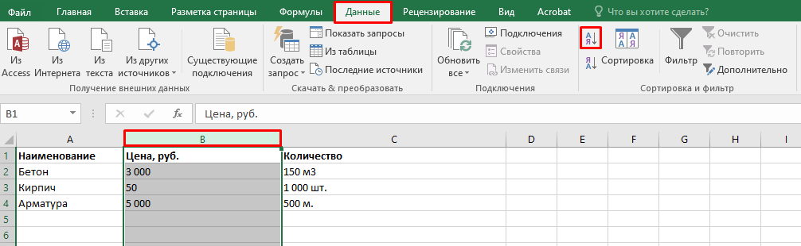

Сортировка

Андрей, добро пожаловать на очередной урок нашего курса Excel для инженеров-строителей. Сегодня мы разберем одну из самых полезных функций Excel — сортировку данных. В процессе работы с большими таблицами, сортировка позволяет быстро упорядочить информацию, что значительно ускоряет анализ данных. Представь, что у тебя есть список материалов для строительного проекта. Среди этого списка есть как дешевые, так и дорогие материалы. Конечно же, тебе нужно быстро найти самые дорогие или дешевые из них для дальнейшего планирования расходов. Сортировка — это именно то, что поможет тебе в этом! Сегодня мы научимся сортировать данные по числовым значениям, тексту и датам. После этого ты сможешь быстро находить нужные материалы, упорядочивать их по стоимости, а также работать с другими категориями данных. Это незаменимый инструмент для работы с таблицами и анализом строительных данных. Приступим!
Введение в сортировку
Сортировка в Excel — это способ упорядочить данные по определенному признаку, будь то по числовым значениям, по алфавиту или по дате.
Какие бывают типы сортировки
- Сортировка по числам: Если у тебя есть таблица с данными о стоимости материалов, ты можешь отсортировать их от самых дешевых до самых дорогих и наоборот.
- Сортировка по тексту: Например, ты можешь отсортировать список материалов по алфавиту, чтобы быстро найти нужный материал.
- Сортировка по дате: Если тебе нужно отсортировать материалы по срокам поставки, то можно использовать сортировку по дате.
Как работает сортировка в Excel

- Сортировка числовых данных: Если в твоей таблице есть числовые значения (например, цены на материалы), ты можешь отсортировать их по возрастанию или убыванию. Для этого достаточно выбрать столбец с данными и использовать соответствующие кнопки в меню Excel.
- Сортировка текстовых данных: Если тебе нужно отсортировать материалы по алфавиту, то можно просто выделить столбец с текстовыми данными и выбрать нужный порядок (по алфавиту или наоборот).
- Сортировка по датам: В Excel также есть возможность сортировать по датам, например, чтобы отсортировать сроки поставки материалов, выбирай столбец с датами и сортируй их по возрастанию или убыванию.
Практическая часть
Теперь давай применим знания на практике. Мы будем работать с таблицей строительных материалов, чтобы отсортировать их по цене:

Чтобы отсортировать данные по цене, сначала выделим столбец с ценами. Теперь перейдем на вкладку «Данные» в верхнем меню и выберем «Сортировка от А до Я» (если нам нужно отсортировать от дешевых к дорогим).

Теперь наша таблица будет упорядочена по возрастанию цен, и мы сможем легко увидеть самые дешевые материалы. Если же мы хотим отсортировать данные от дорогих материалов к дешевым, нужно выбрать «Сортировка от Я до А».
Как видишь, с помощью сортировки мы быстро можем найти самые дорогие или самые дешевые материалы. Этот инструмент значительно ускоряет работу с таблицами.
Отлично! Ты уже освоил основы сортировки данных в Excel, что поможет сэкономить время и эффективно работать с таблицами. Удачи в выполнении упражнения и домашнего задания!
Встроенный материал: Flipcard — открыть сохранённое содержание

Для нахождения самых дорогих материалов можно использовать Сортировку от Я до А
- Правда
- Ложь
Пояснение источника: Для нахождения самых дорогих материалов можно использовать Сортировку от А до Я
Чтобы отсортировать данные по цене, нужно выделить столбец и нажать "Сортировка от А до Я" или "Сортировка от Я до А"
- Правда
- Ложь
Пояснение источника: Чтобы отсортировать данные по цене, нужно выделить столбец и нажать "Сортировка от А до Я" или "Сортировка от Я до А"

Чтобы отсортировать данные по алфавиту, нужно применить автофильтр
- Правда
- Ложь
Пояснение источника: Чтобы отсортировать данные по алфавиту, нужно выбрать столбец с текстом и нажать "Сортировка от А до Я"